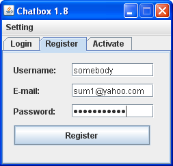

| Home | My Profile | Scripts |
Chatbox Guide
Running the app
You can download it from Chatbox homepage and then usually a simple double-click will run the app. If not, then you'll need to configure your Java setting because this app is using Java (.jar format)Chatbox has not been tested among various OS, currently only tested using Windows XP, so it might not work properly if you're using Mac or Linux
Getting Started
To start using Chatbox, you will need to register your account. It's only a simple 3-step way:- Open Chatbox, go to "Register" tab and fill in your details
 - An activation code will be sent to your e-mail
- Enter the activation code into "Activate" tab
- You are now ready to login!
Using Chatbox
- Chatting: One of the main features of Chatbox is of course to chat. Just type in the typing box, and press ENTER to send your message.
- You can see who are online in the list on the left and can click on one of the user's names to chat privately with him/her.
- Displaying LaTeX: And to display the LaTeX, just enclose your LaTeX command with dollars sign ($), like in the image above.
- For those who are familiar with displaying LaTeX on forums, this is done in exactly the same way
- Message history: You can also see your previous sent messages (up to 50 messages) by pressing up in the typing box
- Keyboard shortcut: To change the user you want to talk to, just press CTRL+UP or CTRL+DOWN to change the user
- Saving messages: You can save the message window into a file by going to File->Save current window. This will save the rendered LaTeX images as code
This application is brought to you by:
justhalf in May 2011